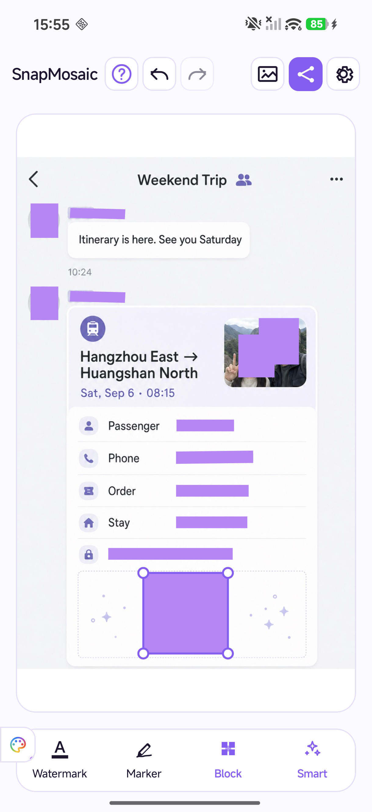
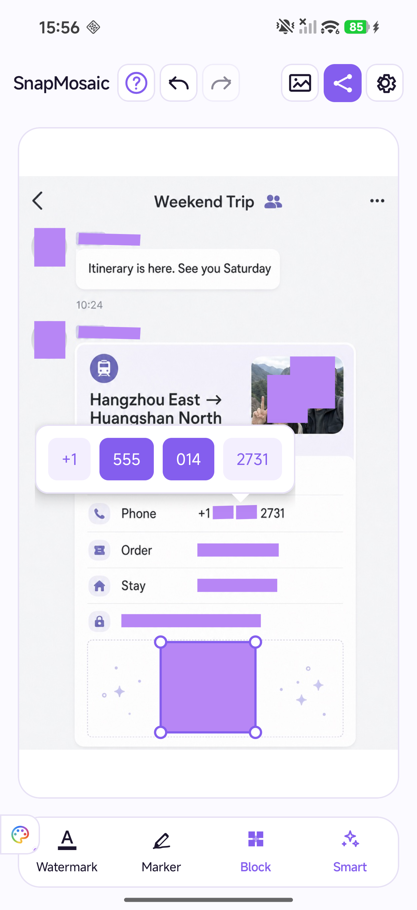
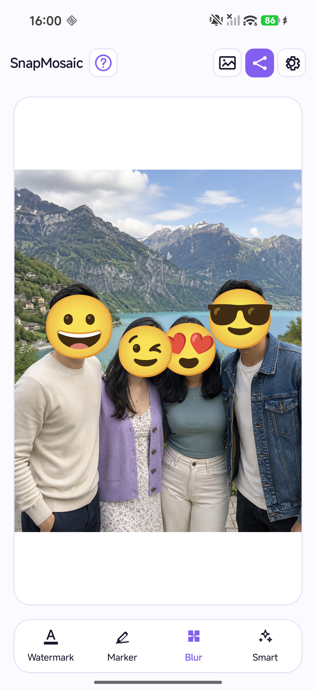
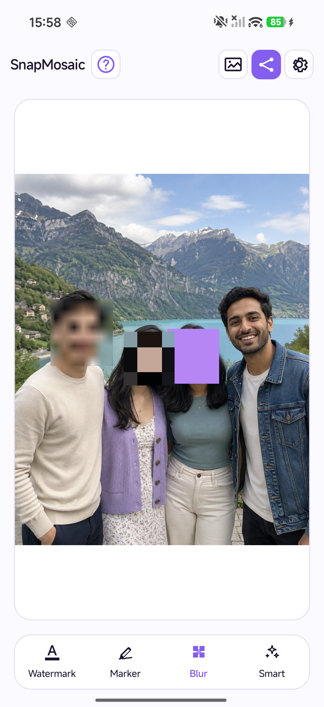
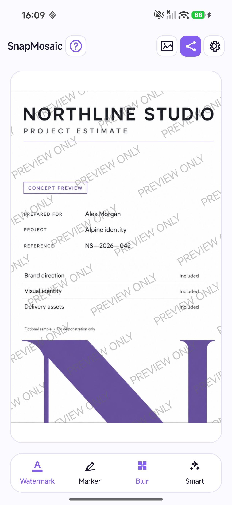
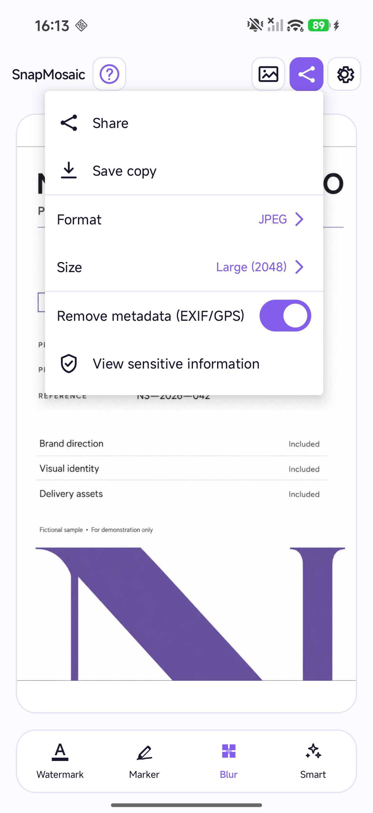

SnapMosaic 2.0 · Privasi foto
Foto Anda.Aturan Anda.
Sembunyikan detail pribadi sebelum berbagi. Deteksi cerdas dan kontrol presisi, di perangkat Anda.
Unduh di Google Play Jelajahi alatAndroid · Tanpa perlu akun


Edit foto di perangkat
Detail pribadi.Kendali di tangan Anda.
Foto yang dipilih diedit di perangkat Anda. Periksa setiap area yang ditutupi, sesuaikan hasilnya, lalu bagikan saat siap.
Cara kerja privasiFitur
Setiap detail, sesuai keinginan.
Sembunyikan hanya yang Anda pilih.
Tekan lama baris yang terdeteksi. Pilih kata yang ingin disembunyikan dan biarkan sisanya tetap terbaca.
Sembunyikan wajah. Pertahankan senyuman.
Tutupi wajah yang terdeteksi dengan stiker emoji. Pilih ekspresi berbeda untuk setiap wajah dan pertahankan suasana foto bersama.

EFEK SESUAI KEBUTUHAN
Gunakan mosaik, blur, atau blok warna solid, dengan efek berbeda untuk setiap area. Gunakan kuas atau bentuk, atur efek, perbesar gambar, serta urungkan dan ulangi edit. Sorot bagian penting dengan penanda.

WATERMARK TEKS ANDA
Tambahkan teks berulang untuk menjelaskan tujuan penggunaan gambar. Atur teks, warna, opasitas, ukuran, sudut, dan jaraknya.

SIMPAN DAN BAGIKAN
Ekspor sebagai JPEG, PNG, atau WebP dan pilih ukuran hasilnya. Simpan gambar baru atau bagikan melalui Android. Hapus metadata EXIF dan GPS saat ekspor agar file yang dibagikan tidak membawa data lokasi.

Apakah SnapMosaic gratis?
Alat edit foto dapat digunakan gratis, dan ekspor gratis menyertakan watermark merek SnapMosaic secara default. Pembelian Pro satu kali yang opsional menghapus watermark merek tersebut dan iklan dalam aplikasi.
Apakah foto saya diunggah untuk diedit?
Tidak perlu akun. Foto diproses di perangkat Anda dan tidak diunggah ke server SnapMosaic untuk diedit. Iklan, pembelian, dan layanan pendukung dapat menggunakan jaringan. Lihat kebijakan privasi.
Bagaimana cara memulihkan pembelian Pro?
Gunakan akun Google Play yang dipakai saat membeli. Buka halaman Pro di pengaturan SnapMosaic, lalu pilih Pulihkan pembelian. Pembelian aktif menghapus tanda air merek SnapMosaic dan iklan dalam aplikasi.
Bagikan saat Anda siap.
Sedikit privasi sebelum berbagi lagi.
Unduh di Google PlayAlat edit foto gratis. Pro bersifat opsional.